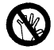
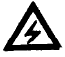
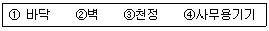

산업안전산업기사 (2003-03-16 기출문제)
1과목: 산업안전관리론
1. 피로의 예방과 회복대책을 설명한 것이다. 틀린 것은?
- 작업속도를 적절하게 할 것
- 건강식품의 준비
- 작업부하를 크게할 것
- 근로시간과 휴식을 적정하게 할 것
(정답률: 91%)

2. 다음중 리더쉽(leadership)의 특성이 아닌 것은?
- 밑으로 부터의 동의에 의한 권한부여
- 개인적 영향에 의한 부하와의 관계유지
- 넓은 부하와의 사회적 간격
- 민주주의적 지휘형태
(정답률: 73%)
3. "인체에 상해, 사망 또는 질병을 유발시키거나 장비와 시설에 손상을 발생시키는 전혀 예상치 못한 사건 또는 일련의 사건"은 어느 것의 정의인가?
- 재해
- 사고
- 직업병
- 부주의
(정답률: 56%)
4. A공장의 도수율이 10 이고 강도율이 1.5라고 하면 이공장의 종합재해지수는?
- 2.74
- 3.74
- 3.87
- 5.74
(정답률: 63%)
5. 50인의 상시 근로자를 가지고 있는 어느 사업장에 1년간 3건의 부상자를 내고 그 휴업 총일수가 200일이라면 강도율은 ?(단, 소수점 세째자리에서 반올림 할 것)
- 1.01
- 1.37
- 2.61
- 3.24
(정답률: 50%)
6. 다음 인사선발의 방법 가운데 사무직에 적용하는 것으로 "자료제시검사" 나 "리더없는 집단토의" 등의 예로서 문제 해결 능력을 평가하기 위하여 고안된 것은?
- 면접
- 상황연습
- 심리검사
- 작업표본
(정답률: 64%)
7. 다음 중 안전교육자의 자세로서 바람직하지 못한 것은?
- 상대방의 입장이 되어서 가르칠 것
- 쉬운 것에서 어려운 것으로 가르칠 것
- 되도록 전문용어를 사용할 것
- 중요한 것은 반복해서 가르칠 것
(정답률: 89%)
8. 리더쉽의 유효성(有效性)을 증대시키는 1차적 요소와 관계가 가장 먼 것은?
- 리더자신
- 추종자 집단
- 상황적 변수
- 조직의 규모
(정답률: 49%)
9. 교육의 3요소 중에서 교육의 주체는?
- 교육방법
- 교재
- 수강자
- 강사
(정답률: 77%)
10. "피로현상은 작업능력의 저하를 가져온다." 이것은 다음 중 어떤 피로의 표식(標識)에 해당되는가?
- 주관적 피로
- 객관적 피로
- 생리적 피로
- 정신적 피로
(정답률: 47%)
11. 하인리히의 사고 방지 대책 제3단계(분석)에서 하여야 할 내용과 가장 적합하지 않은 것은?
- 안전회의 및 토론회 개최
- 인적,물적,환경조건의 분석
- 교육훈련및 배치 사항 파악
- 사고기록 및 관계자료 대조확인
(정답률: 52%)
12. 취급하는 기계, 설비의 구조, 기능, 성능의 개념형성을 위하여 실시하여야 하는 교육은?
- 문제해결교육
- 기능교육
- 지능교육
- 태도교육
(정답률: 23%)
13. 인간의 의식을 강화하고 오류를 감소하며 신속 정확한 판단과 조치를 위한 효과적인 방법은 다음 어느 것인가?
- 확인 철저
- 환호 응답
- 지적 환호
- 작업표준의 교육과 훈련
(정답률: 40%)
14. 기업내 정형교육 가운데 작업의 개선방법 및 사람을 다루는 방법, 작업을 가르치는 방법 등을 교육내용으로 하는 것은?
- CCS(civil communication section)
- MTP(management training program)
- TWI(training within industry)
- ATT(american telephone & telegram co)
(정답률: 71%)
15. 다음 그림 중에서 금지표지는 어느 것인가?


(정답률: 92%)
16. 위험예지훈련의 진행방법에서 3R(라운드)에 해당하는 것은?
- 목표설정
- 본질추구
- 현상파악
- 대책수립
(정답률: 71%)
17. 산업안전 보건법 상 중대 재해의 범위에 해당되지 않는 것은?
- 사망자가 1인이상 발생한 재해
- 3개월 이상의 요양을 요하는 부상자가 동시에 2명 이상 발생한 재해
- 부상자 또는 직업성 질병자가 10명이상 발생한 재해
- 식중독 및 전염성 질환이 다발로 일어난 재해
(정답률: 72%)
18. 옛날부터 유리공 백내장이란 이름으로 알려진 바와 같이 안구의 수정체에 특이한 변화를 일으켜 시력의 감퇴를 유발하거나 심할 경우에는 시력을 잃게 된다는 유해광선의 종류는?
- 적외선
- 가시광선
- 자외선
- X선
(정답률: 53%)
19. 방진마스크의 선정기준 중 옳은 것은?
- 유효공간(사용적)이 클 것
- 분진포집(여과) 효율이 좋을 것
- 사방시야는 50° 이상 일 것
- 흡기저항은 낮고 배기저항은 높을 것
(정답률: 61%)
20. Herzberg의 2요인 이론에 대한 설명중 올바른 것은?
- 동기요인은 직무에 만족을 느끼는 주요인이다.
- 동기요인은 직무 만족과 관계가 없다.
- 위생요인은 직무에 만족을 느끼는 주요인이다.
- 위생요인은 직무내용이다.
(정답률: 70%)
2과목: 인간공학 및 시스템안전공학
21. system에서 일반적으로 사용되는 고장의 형에 해당되지 않는 것은?
- 오동작
- 노후 고장
- 개로 또는 개방의 고장
- 폐로 또는 폐쇄의 고장
(정답률: 36%)
22. 통제 표시비를 설계할 때 고려하는 여러 요소들 중 잘못 설명한 것은?
- 계기의 조절시간이 짧게 소요되도록 계기의 크기(size)는 항상 작게 설계한다.
- 짧은 주행 시간내에 공차의 인정범위를 초과하지 않는 계기를 마련한다.
- 목시거리(目示距離)가 길면 길수록 조절의 정확도는 떨어진다.
- 통제 기기 시스템에서 발생하는 조작시간의 지연은 직접적으로 통제 표시비가 가장 크게 작용하고 있다.
(정답률: 66%)
23. 인간이 서로 마주하는 거리는 양자간의 관계성의 정도를 표현해 준다. 다음중 사회적 관계를 나타내는 사회적 거리로 적당한 것은?
- 120-360cm
- 360-750cm
- 45-75cm
- 15-45cm
(정답률: 50%)
24. 예비위험분석에서 위험강도의 범주와 명칭이 맞게 연결된 것은?
- 범주Ⅰ - 무시
- 범주Ⅱ - 파국적
- 범주Ⅲ - 한계적
- 범주Ⅳ - 위기적
(정답률: 58%)
25. 인간의 실수 중 개인능력에 속하지 않는 것은?
- 긴장수준
- 피로상태
- 교육훈련
- 자질
(정답률: 35%)
26. 인간의 신뢰성 요인 중 경험, 지식, 기술에 의존하는 요인은?
- 주의력
- 긴장수준
- 의식수준
- 지식수준
(정답률: 35%)
27. 고장은 기계의 신뢰를 결정한다. 불량제조나 생산과정에서의 품질관리 미비로 생기는 고장으로 점검작업이나 시운전으로 예방할 수 있는 고장은?
- 우발고장
- 마모고장
- 초기고장
- 평상고장
(정답률: 71%)
28. 성공수(success tree)의 정상사상을 발생시키는 기본사상들의 최소집합을 시스템 신뢰도 측면에서는 무엇이라고 하는가?
- cut set
- true set
- path set
- module set
(정답률: 42%)
29. 사무실 설계시 반사율이 낮은 것부터 순서대로 나열한 것은?

- ①-②-③-④
- ③-④-①-②
- ①-④-②-③
- ①-④-③-②
(정답률: 76%)
30. 정보의 측정단위인 bit를 옳게 설명한 것은?
- 실현가능성이 같은 2개의 대안 중 하나가 명시되었을 때 얻는 정보량
- 실현가능성이 같은 4개의 대안 중 하나가 명시되었을 때 얻는 정보량
- 실현가능성이 같은 8개의 대안 중 하나가 명시되었을 때 얻는 정보량
- 실현가능성이 같은 16개의 대안 중 하나가 명시되었을 때 얻는 정보량
(정답률: 63%)
31. 위험분석상의 강도를 분류할시에 환경, 인원의 과오, 절차의 결함, 요소의 고장 또는 기능 불량이 시스템의 성능을 저하시키지만 인적.물적의 중대한 손해를 초래하지 않고 대처 또는 제어할 수 있는 상태는?
- 파국적(catastrophic)
- 중대(critical)
- 한계적(marginal)
- 무시가능(neqliqible)
(정답률: 65%)
32. 다음 표지 장치 중 정적 표시 장치는?
- 온도계
- 속도계
- 고도계
- 그래프
(정답률: 64%)
33. 인간이 기계를 조종하여 임무를 수행하여야하는 인간-기계체계가 있다. 만일 이 인간-기계 통합체계의 신뢰도가 0.8 이상 이어야 하며, 인간의 신뢰도는 0.9라 한다면, 기계의 신뢰도는 얼마 이상이어야 하는가?
- 0.6 이상
- 0.7 이상
- 0.5 이상
- 0.9 이상
(정답률: 48%)
34. 인간의 실수(human error)가 기계의 고장과 다른 점이 아닌 것은?
- 인간의 실수는 우발적 재발하는 유형이다.
- 기계나 설비(hardware)의 고장조건은 저절로 복구되지 않는 것이다.
- 인간은 기계와는 달리 학습에 의해 계속적으로 성능을 향상시킨다.
- 인간성능과 압박(stress)은 선형관계를 가져 압박이 중간정도일 때 성능수준이 가장 높다.
(정답률: 48%)
35. 다음중 시스템의 신뢰도를 증가시키는 방법 가운데 주어진 시스템과 동일한 시스템을 설치하여 신뢰도를 증가시키는 것은?
- 중복설계
- 부품개선
- 풀 프루프 설계
- 페일세이프 설계
(정답률: 63%)
36. 작업장에서 광원으로부터의 직사휘광을 처리하는 방법으로 옳은 것은 무엇인가?
- 광원의 휘도를 줄이고 수를 줄인다.
- 광원을 시선에서 가까이 위치시킨다.
- 휘광원 주위를 밝게 하여 광도비를 늘린다.
- 가리개, 차양을 설치한다.
(정답률: 73%)
37. 화학공정공장(석유화학사업장)에서 가동문제를 파악하는데 널리 사용되며, 위험요소를 예측하고 새로운 공정에 대한 가동문제를 예측하는 데 사용되는 것은?
- SHA
- HAZOP
- CCFA
- EVP
(정답률: 72%)
38. 인간 기계체계 설계시 인간공학적 해석방법이 아닌 것은?
- 링크해석법
- 웨이트식 중요빈도법
- 공간지수법
- 워크샘플링법
(정답률: 39%)
39. 작업설계를 할때 인간요소적 접근방법은?
- 작업만족도를 강조
- 능률과 생산성을 강조
- 작업순환과 배치를 강조
- 작업에 대한 책임을 강조
(정답률: 31%)
40. 음압수준이 10dB 증가하면 음압은 몇배가 되는가?
- √10 배
- 10배
- √5 배
- 5배
(정답률: 52%)
3과목: 기계위험방지기술
41. 동력 전도 부분의 전방 30cm위치에 일방 평형보호망을 설치하고자 한다. 보호망의 최대 개구 간격은?
- 36mm
- 46mm
- 56mm
- 66mm
(정답률: 49%)
42. 소성가공에서 열간가공과 냉간가공을 구분하는 조건은 다음 문제중 어느 것인가?
- 단조온도
- 변태점온도
- 재결정 온도
- 담금질 온도
(정답률: 43%)
43. 로울러기의 급정지를 위한 방호장치를 설치하고자 한다. 앞면 로울러의 직경이 30cm, 분당 회전속도는 40rpm 이라면 어떤 성능의 급정지 장치를 부착해야 하는가?(오류 신고가 접수된 문제입니다. 반드시 정답과 해설을 확인하시기 바랍니다.)
- 급정지 거리가 앞면 로울러 원주의 1/3.5
- 급정지 거리가 앞면 로울러 원주의 1/3
- 급정지 거리가 앞면 로울러 원주의 1/2.5
- 급정지 거리가 앞면 로울러 원주의 1/2
(정답률: 33%)
44. 선반의 규격표시 방법이 옳은 것은?
- 베드(Bed)의 길이를 mm로 표시한다.
- 베드(Bed)의 길이를 피이트(Feet)로 표시한다.
- 선반의 총중량과 원동기의 마력으로 표시한다.
- 깎을 수 있는 일감의 최대지름과 길이로 표시한다.
(정답률: 41%)
45. 다음 재료 중 정작업을 해서는 안되는 것은?
- 알루미늄
- 황동
- 담금질한강
- 연강
(정답률: 46%)
46. 크레인과 관련된 사항 중 사실과 다른 것은?
- 체인 길이의 늘어남은 제조 당시보다 7%까지 허용된다.
- 와이어로우프의 직경감소가 공칭지름의 7% 초과시 사용 할 수 없다.
- 후크, 샤클등의 철구로서 변형된 것은 크레인의 고리걸이용구로 사용할 수 없다.
- 크레인에서 사용되는 와이어로우프 중 화물 하중을 직접 지지하는 경우 안전계수는 5이상이다.
(정답률: 45%)
47. 다음 설명 중 잘못된 것은?
- 연삭속도가 낮으면 글래이징(Glazing)을 일으키기 쉽다.
- 결합도가 단단한 것은 글래이징(Glazing)을 일으키기 쉽다.
- 결합도가 연한 숫돌은 사용 중 잘 달아진다.
- 연삭깊이가 클 때에는 글래이징(Glazing)을 일으키기 쉽다.
(정답률: 45%)
48. 호이스트 사용시에 안전수칙으로 맞지 않는 것은?
- 짐을 매단 채 방치하지 않는다.
- 규격 이상의 하중을 걸지 않는다.
- 주행시는 사람이 짐에 타서 운전한다.
- 짐의 무게 중심의 바로 위에서 달아올린다.
(정답률: 71%)
49. 기계설비의 일반적인 안전조건에 해당되지 않는 것은?
- 기능의 안전성
- 보존성
- 구조의 안전성
- 작업의 안전성
(정답률: 77%)
50. 기계부품에 작용하는 힘 중에서 안전을 크게 취하여야 할 힘의 종류는?
- 정하중
- 교번하중
- 충격하중
- 반복하중
(정답률: 54%)
51. 고리걸이용 와이어로프의 절단하중이 4ton일 때 이 로프에 걸리는 하중의 최대값은 ?(단, 안전계수는 5이다.)
- 400kg
- 500kg
- 600kg
- 800kg
(정답률: 60%)
52. 다음 중 페일세이프(fail safe)의 기능과 구조를 가진 장치는?
- 카메라의 이중촬영 방지기구
- 기계의 안전장치
- 인터록 기구
- 항공기의 엔진
(정답률: 48%)
53. 수직 선반, 터릿트 선반 등으로 부터의 돌출 가공물에 설치할 방호 장치는?
- 클럿치
- 덮개 또는 울
- 슬리이브
- 베드
(정답률: 74%)
54. 종이,천,금속박 등을 통과시키는 로울러기에 설치해야 할 방호장치에 해당되지 않 는 것은?
- 방호판
- 안내 로울러
- 동력차단장치
- 급정지 장치
(정답률: 37%)
55. 프레스 작업에서 제품을 꺼낼 경우 파쇠철을 제거하기 위하여 사용하는데 가장 알맞는 것은?
- 브러시
- 압축공기
- 걸레
- 칩 브레이크
(정답률: 43%)
56. 연삭숫돌과 작업대, 교반기의 교반날개와 몸체사이 및 반복되는 링크기구에서 형성되는 위험점은?
- 협착점(squeeze point)
- 끼임점(shear point)
- 절단점(cutting point)
- 물림점(nip point)
(정답률: 58%)
57. 프라이밍과 포오밍의 발생원인에 해당되지 않 는 것은?
- 기수분리장치가 불완전한 경우
- 저수위인 경우
- 보일러수가 농축된 경우
- 증기부하가 과대한 경우
(정답률: 51%)
58. 재료 강도 시험 중 항복점을 알 수 있는 시험은?
- 압축시험
- 충격시험
- 마모시험
- 인장시험
(정답률: 51%)
59. 프레스기 작동후 작업점까지 도달시간이 0.5초 걸렸다면 양수조작식 안전장치의 조작부의 설치거리는?
- 60㎝
- 70㎝
- 80㎝
- 90㎝
(정답률: 42%)
60. 와이어 로우프로 중량물을 달아 올릴때 로우프에 가장 힘이 크게 걸리는 각도는?(오류 신고가 접수된 문제입니다. 반드시 정답과 해설을 확인하시기 바랍니다.)
- 30°
- 60°
- 120°
- 150°
(정답률: 22%)
4과목: 전기 및 화학설비위험방지기술
61. 25℃, 1기압에서 벤젠(C6H6)의 허용농도가 10ppm일 때 mg/m3의 단위로 허용농도를 나타내면 ?(단, C, H의 원자량은 각각 12, 1 이다.)
- 23.7
- 34.8
- 45.9
- 56.1
(정답률: 45%)
62. 자동 화재 탐지설비에 사용되는 감지기 중 연기농도를 감지하는 방식을 채용한 것은?
- 차동식 감지기
- 보상식 감지기
- 이온화식 감지기
- 정온식 감지기
(정답률: 46%)
63. 브리이더밸브(Breather valve)가 장착된 벤젠저장 탱크가 옥외에 설치되어 있고, 저장탱크로 부터 1m떨어진 지점에 전기 스위치가 있다. 이때 전기스위치의 방폭기준은 IEC기준중 어느 것을 선택해야 하는가? (단, 벤젠의 발화점은 538℃이다.)
- Zone 1, T3
- Zone 1, T1
- Zone O, T4
- Zone 2, T6
(정답률: 46%)
64. 활선작업에 대한 설명중 틀린 것은?
- 전기를 휴전시킨채로 전기작업을 하는 것이다.
- 근접된 충전부분에 방호구를 설치해야 한다.
- 작업자는 절연용 보호구를 착용해야 한다.
- 감시인을 정하여 감시하게 한다.
(정답률: 57%)
65. 다음 중 근본적으로 화재의 발생을 방지하는 방법은?(오류 신고가 접수된 문제입니다. 반드시 정답과 해설을 확인하시기 바랍니다.)
- 건물 내장재 사용시 난연화 재료를 사용한다.
- 인화성물질의 저장시 통풍과 환기를 철저히 한다.
- 가연물에 연소억제제를 첨가한다.
- 휘발유를 저장할 때 밀폐 저장한다.
(정답률: 29%)
66. 다음중 산업안전보건법 안전에 관한 규칙상 특수화학설비에 해당되는 것은?
- 오리피스관
- 고온유지용 가열기
- 특정화학물질 저장설비
- 원심분리기
(정답률: 18%)
67. 메탄올의 연소반응이 다음과 같이 반응할 때 최소산소농도(MOC)는 얼마인가 ?(단, 메탄올의 연소 하한값은 L=6.7Vol%이다.)
- 15%
- 10%
- 6.7%
- 1.5%
(정답률: 38%)
68. 다음은 폭발성 가스 또는 증기에 대한 방폭구조의 설명이다. 틀린 것은?
- 내압방폭구조 : 전폐구조로 용기내부에서 폭발시 그 압력에 견디고 외부로부터 폭발성 가스에 인화될 우려가 없도록 한 구조
- 압력 방폭구조 : 용기내부에 불연성 보호체를 압입하여 내부압력을 유지하므로서 폭발성 가스의 침입을 방지하는 구조
- 유입 방폭구조 : 전기기기의 불꽃, 아크 또는 고온이 발생하는 부분을 기름속에 넣어 폭발성 가스에 인화될 우려가 없도록 한 구조
- 안전증 방폭구조 : 정상시 및 사고시 (단선, 단락, 지락 등)에 발생하는 전기불꽃, 아크 또는 고온에 의하여 폭발성 가스에 점화되지 않는 구조
(정답률: 40%)
69. 차동식 분포형 열전기식 감지기의 작동원리는 2종의 금속을 양단에 결합하여 양단에 온도차를 주었을 때 기전력이 발생하는 원리를 이용한 것이다. 이 원리를 무엇이라고 하는가?
- 톰슨효과(Thomson effect)
- 제백효과(Seebeck effect)
- 홀효과(Hall effect)
- 핀치효과(Pinch effect)
(정답률: 41%)
70. 전자, 통신기기 등의 전자파장해(EMI)를 방지하기 위한 조치로써 부적절한 것은?
- 접지실시
- 차폐, 흡수, 대책실시
- 필터설치
- 절연보강
(정답률: 37%)
71. 다음중 B급 화재에 해당되는 것은?
- 인화물질(유류)에 의한 화재
- 전기장치에 의한 화재
- 마그네슘등에 의한 금속화재
- 일반 가열물에 의한 화재
(정답률: 73%)
72. 정전작업시의 작업전 조치사항중 잘못된 것은?
- 개폐기에 시건장치
- 잔류전하의 방전
- 절연용 방호장치의 설치
- 단락접지 시행
(정답률: 16%)
73. 폭발범위에 있는 가연성가스 혼합물에 전압을 변화시키면서 전기불꽃을 주었더니 1000볼트가 되는 순간 폭발이 일어났다. 이때 사용한 전기불꽃의 콘덴서 용량은 0.1μ F을 사용하였다. 이 가스에 대한 최소발화에너지는 얼마인가?
- 5mJ
- 10mJ
- 50mJ
- 100mJ
(정답률: 39%)
74. 인화성 물질의 저장 탱크 압력을 일정하게 유지하기 위하여 설치하는 안전밸브는?
- safety밸브
- relief밸브
- breather밸브
- check밸브
(정답률: 24%)
75. 릴리프밸브(relief valve)의 사용용도는?
- 액체
- 스팀
- 기체
- 증기
(정답률: 28%)
76. 송전선의 경우 복도체방식으로 송전하는데 이는 어떤 방전효과를 이용한 것인가?
- 스파크방전
- 코로나방전
- 연면방전
- 자기방전
(정답률: 54%)
77. 폭발 범위내의 농도에서 연소속도가 폭발보다 빠른 것 은?
- 발화
- 착화
- 인화
- 폭굉
(정답률: 65%)
78. 전기설비의 방폭구조 중 내압형 방폭구조에서 폭발강도시험은 소정의 시험용 표준가스를 사용하여 몇회 반복 실시하여도 이중 1회라도 화염일주가 생겨서는 안되는가?
- 5회
- 10회
- 15회
- 20회
(정답률: 26%)
79. 다음 중 물리.화학적 특성이 같은 가스는?
- 산소, 아황산가스
- 오존, 암모니아
- 메탄, 에틸렌
- 헬륨, 염소
(정답률: 57%)
80. 전선 또는 케이블의 굵기를 선정할때 고려하지 않아도 되는 사항은?
- 허용전류
- 전압강하
- 기계적 강도
- 누전전류
(정답률: 37%)
5과목: 건설안전기술
81. 크레인 등의 고리걸이 와이어로프의 사용금지 규정이옳은 것은?
- 지름의 감소가 공칭지름의 7% 초과
- 지름의 감소가 공칭지름의 8% 초과
- 지름의 감소가 공칭지름의 9% 초과
- 지름의 감소가 공칭지름의 10% 초과
(정답률: 59%)
82. 계단 및 계단참의 안전율은 얼마 이상이어야 하는가?
- 3
- 4
- 5
- 6
(정답률: 42%)
83. 사다리 기둥을 설치할 때의 준수사항으로 틀린 것은?
- 견고한 구조일 것
- 기둥과 수평면의 각도는 80° 이하로 할 것
- 재료는 심한 손상, 부식 등이 없을 것
- 접는식 사다리 기둥은 철물 등을 사용할 것
(정답률: 71%)
84. 다음은 비계가 갖추어야 할 3요소이다. 옳지 않은 것은?
- 안전성
- 작업성
- 경제성
- 영구성
(정답률: 68%)
85. 크레인의 도괴 또는 전도에 의한 재해원인이 아닌 것은?
- 권과방지장치가 고장났다.
- 크레인의 설치방법이 나쁘다.
- 이동식 크레인을 연약지반에서 지반보강재를 사용치 않고 운반했다.
- 규정이상의 중량물을 적재하고 운행했다.
(정답률: 44%)
86. 개착식 굴착공사의 흙막이공법 중 버팀보공법을 적용하여 굴착할 때 지반붕괴를 방지하기 위하여 사용하는 계측장치로 거리가 먼 것은?
- 지하수위계
- 경사계
- 록볼트응력계
- 변형률계
(정답률: 50%)
87. 다음 중 펌프카에 의한 타설 작업시 주의 사항으로 옳지 않은 것은?
- 레미콘 차에 유도자를 배치한다.
- 후렉시블 호스는 반경 1m 이하로 구부리지 않는다.
- 압력은 5kgf/cm2로 조정하여 사용하여야 한다.
- 타설 배관의 두께는 0.5mm 이상의 것을 사용한다.
(정답률: 38%)
88. 다음 중 공사현장에서 안전관리계획 수립원칙으로 옳지 않은 것은?
- 실천가능 할 것
- 회사방침과 일관성이 있을 것
- 해당공사 현장의 특성에 적합하고 구체적일 것
- 시공기술, 기계· 자재 등 제 관리계획과 불균형일 것
(정답률: 73%)
89. 유해· 위험방지 계획서를 제출해야 하는 경우 언제 누구에게 제출해야 하는가?
- 공사착공 15일 전에 건설교통부장관
- 공사착공후 15일 이내에 건설교통부장관
- 공사착공 30일 전에 노동부장관
- 공사착공 30일 전에 건설교통부장관
(정답률: 37%)
90. 차량계 건설기계를 사용하여 작업을 하고자 할 때 고려하여야 할 사항과 작업계획에 포함하여야 할 사항 중 가장 거리가 먼 것은?
- 차량계 건설기계의 종류 및 성능
- 차량계 건설기계의 운행 경로
- 차량계 건설기계에 의한 작업방법
- 차량계 건설기계의 점검 및 보수방법
(정답률: 48%)
91. 사질지반의 굴착면의 구배와 높이가 맞게 짝지어진 것은?
- 35° - 5m 미만
- 45° - 5m 미만
- 35° - 2m 미만
- 45° - 2m 미만
(정답률: 28%)
92. 다음 중 구조물 해체작업용 기계· 기구의 종류가 아닌 것은?
- 포크 리프트(Fork lift)
- 압쇄기
- 대형 브레이커
- 쐐기 타입기(Rock jack)
(정답률: 41%)
93. 근로자의 작업배치시 추락위험이 있을 때 비계 조립등에 의하여 작업발판을 설치해야 하는 높이 기준은?
- 1m 이상
- 2m 이상
- 3m 이상
- 4m 이상
(정답률: 67%)
94. 충전전로 근접작업시 안전조치 사항으로 가장 관계가 없는 것은?
- 충전전로 이설
- 충전전로에 절연용 방호구 설치
- 경고표지 등 안전표지를 설치
- 근로자에게 절연용 방호구 착용
(정답률: 18%)
95. 작업장에 설치하는 계단에 대한 설명 중 옳은 것은?
- 계단 및 계단참은 400kgf/m2 이상의 하중에 견딜수 있어야 한다.
- 계단참은 그 높이가 3.5m를 초과하여 설치해서는 안된다.
- 목재로 된 난간은 5m2 이상의 단면이어야 한다.
- 금속제 파이프로 된 난간은 3cm 이상의 지름이어야 한다.
(정답률: 27%)
96. 포틀랜드시멘트를 사용한 콘크리트 바닥슬래브 밑의 거푸집 존치기간에 대한 설명으로 옳지 않은 것은?
- 콘크리트 압축강도 50kgf/cm2 이상
- 설계기준강도의 50% 이상
- 평균기온이 20℃ 이상일 때 재령 7일 이상
- 평균기온이 10℃ 이상 20℃ 미만일 때 재령 8일 이상
(정답률: 26%)
97. 다음은 보일링(boiling)현상을 방지하기 위한 대책을 설명한 것이다. 옳지 않은 것은?
- 굴착배면의 지하수위를 낮춘다.
- 토류벽의 근입깊이를 깊게한다.
- 토류벽 상단부에 버팀대(strut)를 보강한다.
- 토류벽 선단에 코아 및 필터층을 설치한다.
(정답률: 35%)
98. 거푸집의 측압에 영향을 주는 요인을 설명한 것이다. 옳지 않은 것은?
- 콘크리트의 타설 속도가 빠를수록 측압은 커진다.
- 콘크리트의 슬럼프치가 크면 클수록 측압은 커진다.
- 콘크리트의 타설 온도가 높으면 높을수록 측압은 커진다.
- 기둥이 가장 크고 그 다음은 벽이다.
(정답률: 52%)
99. 건설용 리프트의 폭풍에 의한 도괴를 방지하는 조치를 하여야 하는 최소 풍속은?
- 순간 풍속 30m/s 이상
- 순간 풍속 35m/s 이상
- 순간 풍속 40m/s 이상
- 순간 풍속 45m/s 이상
(정답률: 47%)
100. 철골공사에서 안전을 위하여 사전 검토 또는 계획수립을 해야 하는 내용으로 가장 관련이 없는 것은?
- 추락방지망의 설치
- 사용기계의 용량 및 사용대수
- 기상조건의 검토
- 지하매설물 조사
(정답률: 43%)